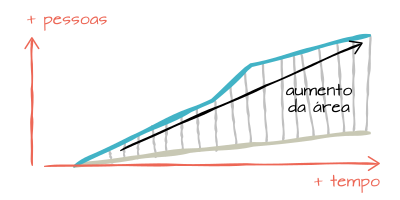

A cada ano, mais pessoas começam a utilizar a internet
Visualizando o crescimento em relação a 2005 da "Evolução da população e de usuários de internet", podemos ver que a diferença entre as duas linhas é cada vez maior, o que gera uma área maior (desenho acima). Essa área representa a diferença do crescimento de usuários da internet e da população.
Apesar da população ter aumentado em um ritmo, as pessoas que utilizam a internet aumentam em um ritmo muito maior, o que significa que cada vez mais as pessoas estão aprendendo a utilizar a internet.
Não confunda!
É importante entender qual a diferença entre dois pontos de vista que podem parecer igual em um primeiro momento, mas que possuem um grande impacto na forma de avaliar as visualizações:
Porcentagem das pessoas de um determinado perfil entre os usuários da internet
Este é o modo apresentado no gráfico "Perfil do usuário da internet do Brasil" nesta página. O intuito aqui é responder perguntas do tipo "Entre as pessoas que acessam a internet, quantas pessoas estudaram de 8 a 10 anos?". Nós já sabemos quantas pessoas utilizam a internet, e queremos saber como elas se distribuem em um perfil.
Neste modo de visualização, uma alta porcentagem de usuários com um perfil não representa um favorecimento da utilização da internet provacada pelo perfil, pois não sabemos quantas pessoas como um todo existem com esse perfil.
Porcentagem de usuários de internet entre as pessoas de um determinado perfil.
Este é o modo de visualização presente na maioria dos casos nas outras páginas do site. Diferente do primeiro modo, esta forma de visualizar é útil quando sabemos a quantidade de pessoas existentes em um determinado perfil (com renda acima de 5 S.M., por exemplo) e queremos saber quantas delas acessam a internet.
Como sabemos quantas pessoas existem com um determinado perfil, este modo é mais adequado para medir o quanto um perfil influencia no acesso à internet.